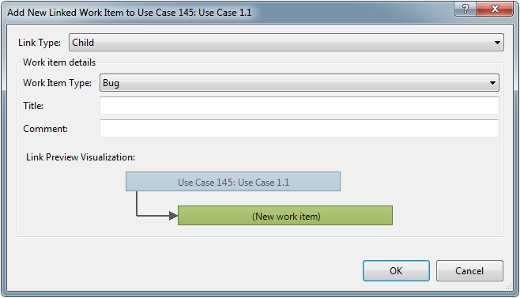

You can use work items to track, monitor, and report on the development of a product and its features. A work item is a database record that you create in Visual Studio Team Foundation Server to record the definition, assignment, priority, and state of work. The process template for GovDev for TFS 2010 v1.0 defines six types of work items: Use Cases, tasks, test cases, shared steps, bugs, and issues.
In this topic
-
Defining Requirements, Use Cases, Tasks, and Other Work Items
-
Creating a Requirement, Use Case, a Task, or Another Type of Work Item
-
Creating Many Requirements, Use Cases, Tasks, or Other Work Items at One Time
-
Creating a Work Item that Automatically Links to Another Work Item
-
Creating Test Cases and Test Plans By Using Test and Lab Manager
-
Opening and Tracking Bugs By Using Test Runner and Test and Lab Manager
By defining individual work items and storing them in a common database and metrics warehouse, you can answer questions on project health whenever they come up. Work items, links between work items, and file attachments are all stored in the Team Foundation database for tracking work items, as the following illustration shows.
 Defining
Requirements, Use Cases, Tasks, and Other Work Items
Defining
Requirements, Use Cases, Tasks, and Other Work Items
You can specify and update information for work items on the work item form. The topics in this section provide details about how you work within each work item form.
|
Tasks |
Related content |
||
|---|---|---|---|
|
Track Requirements and Use Cases. A team creates Requirements and Use Cases to define the features and functions to be implemented. A use case describes customer goals at a high level and are fundamental elements of the team's planning effort because they help the team estimate, prioritize, define, schedule, and verify work that relates to each use case. You can use the Requirements Traceability and Requirments Progress Reports to track the status of Requirements/Use Cases and team progress. |
|||
|
Track and estimate work. A team creates tasks to track the level of effort that is required to implement a use case or other areas of work that are identified for the project. Tasks should represent a small unit of work that can be accomplished within one to two days. You can break larger tasks down into smaller subtasks. You can create a task to track work to develop code, design and run tests, address bugs, and perform regression testing. In addition, you can create tasks to support generic work that must be performed. By tracking work hours for each task, the team can gain insight into the progress that it has made on the project. You can use the Remaining Work and Burndown and Burn Rate reports to monitor team progress, identify problems in the flow of work, and determine the team burn rate. |
|||
|
Test the application. A team uses test cases to define tests that will support testing of Use Cases. You can define manual test cases that specify a sequence of action and validation steps to run, or you can specify automated test cases that reference an automation file.
You can use the Test Case Readiness report to determine the progress that the team is making toward defining test cases. You can use the Test Plan Progress report to determine how many tests are passing or failing. |
|||
|
Define shared steps. A team uses shared steps to streamline definition and maintenance of manual test cases. In shared steps, you define a sequence of action and validation steps to run as part of a test case. Many tests require the same sequence of steps to be performed for multiple test cases. By creating shared steps, you can define a sequence of steps once and insert it into many test cases.
|
|||
|
Open and track bugs. You can track a code defect by creating a bug work item. By creating a bug, you can accurately report the defect in a way that helps other members of the team to understand the full impact of the problem. In the bug, you should describe the steps that led to the unexpected behavior so that others can reproduce it, and the test results should clearly show the problem. The clarity and completeness of this description often affects the probability that the bug will be fixed. You can use the Triage workbook to rank and assign bugs to be worked on for an iteration or release. You can use the Bug Status report to track the team's progress toward resolving and closing bugs. |
|||
|
Define and manage risks, issues, and impediments. You can define known or potential problems, impediments, or risks to your project by creating issue work items. When concrete action is required, an issue might translate into one or more tasks to be performed to mitigate the issue. For example, a technical issue can lead to an architectural prototyping effort. Teams should always encourage its members to identify issues and ensure that they contribute as much information as possible about issues that jeopardize team success. Individuals should be empowered to identify issues without fear of retribution for honestly expressing tentative or controversial views. Teams who create and sustain positive environments for managing issues will identify and address issues earlier, faster, and with less confusion and conflict than teams who sustain negative risk environments. You can use the Issues workbook to review, rank, and manage issues. |
Creating
a Requirement, Use Case, a Task, or Another Type of Work Item
You can create a work item by opening Team Web Access or Team Explorer and following the procedure in this section. After you create a work item, you can always modify and add details as a sprint progresses.
To create a requirement, use case, task, or another type of work item
-
Open either Team Web Access or Team Explorer, and connect to the team project collection that contains the team project in which you want to create the work item.
For more information, see Connect to and Access Team Projects in Team Foundation Server.
-
Perform one of the following steps:
-
In Team Web Access, find the quick launch area of the navigation pane, and then click the New Work Item arrow. On the Work Item Types menu, click the type of work item that you want to create.
-
In Team Explorer, open the Team menu, point to Add Work Item, and click the type of work item.
A work item form opens of the type that you specified.
-
-
Define the remaining fields as the type of work item requires.
For more information, see Defining Use Cases, Tasks, or Other Work Items earlier in this topic.
-
On the work item toolbar, click
 Save Work Item.
Save Work Item.  Note
Note
After you save the work item, the identifier appears in the title under the work item toolbar.
Creating
Many Requirements, Use Cases, Tasks, or Other Work Items at One Time
You can quickly define requirements, use cases, tasks, issues, and bugs by using the workbooks that are provided with the process template for GovDev for TFS 2010 v1.0. For more information, see the following topics:
Creating
a Work Item that Automatically Links to Another Work Item
You can create a work item that automatically links to an existing use case or other work item. You can perform this action from an open work item or from a list of results for a work item query.
To create a work item that is linked to an existing work item
-
Open either Team Web Access or Team Explorer, and connect to the project collection that contains the team project where you want to define the linked work item.
-
Right-click the Open Work Items team query, and then click Open.
-
Perform one of the following actions:
-
In Team Web Access, click the arrow next to the existing work item to which you want to link the new work item, and then click Add New Linked Work Item .
-
In Team Explorer, right-click the existing work item to which you want to link the new work item, and then click Add New Linked Work Item.
The Add new Linked Work Item dialog box opens.
 -
-
Define the following fields:
-
In the Link Type list, click Tests if you are linking the new work item to an existing test case or use case. Click Related if you are linking the new work item to an existing task, issue, or another bug.
-
In the Work Item Type list, click the type of work item that you want to create.
-
In Title, type a descriptive name that indicates the use case, task, or other type of work item to be tracked.
-
(Optional) In Comment, type additional information.
-
-
Click OK.
A work item form opens with the information that you have provided.
-
Define the remaining fields as the type of work item requires.
For more information, see Defining Use Cases, Tasks, or Other Work Itemsearlier in this topic.
-
Click
Save Work Item.
Creating
Test Cases and Test Plans By Using Test and Lab Manager
By using Microsoft Test Manager, you can create not only test cases but also test suites and test configurations that support testing your project. You can use test configurations to define the software environment under which you want to run your test cases and test suites.
You can group your test cases together by organizing them into a hierarchy of test suites in your test plan. By creating test suites, you can run sets of test cases as a group. For more information about how to use Microsoft Test Manager to define test cases, test suites, and test plans, see Testing the Application.
Opening
and Tracking Bugs using Test Runner and Test and Lab Manager
By using Microsoft Test Manager, you can submit bugs that automatically contain information about the test case and test environment that you ran, in addition to the specific test step on which you discovered a code defect. Bugs that you create by using Microsoft Test Manager automatically link the bug to the test case that found the bug.
You can create bugs in the following ways:
-
From Microsoft Test Manager when you run a test by using Test Runner, view a test result, or view your bugs
-
From Team Web Access or Team Explorer
-
From Office Excel (useful if you are submitting multiple bugs at the same time)
For information about how to submit, track, and verify bugs and fixes by using Microsoft Test Manager, see the related content in the following table.
|
Tasks |
Related content |
|---|---|
|
Create a bug. When you notice unexpected behavior of the application during ad hoc testing, you can quickly create a bug. |
|
|
Collect diagnostic data to support debugging. By using Test Runner, you can collect diagnostic trace data on an application that was written with managed code, which a developer can then use with Intellitrace to isolate errors. |
|
|
Create a recorded action log file and add it to a bug. You can record actions as text in a log file when you run manual tests. You can automatically add this file to any bug that you create as you run your manual test. |
|
|
Create a test case from a bug and a recorded action log file. You can use an action log to create a manual test case from a bug or a test result. By taking this approach, you can create test cases without having to type in all the steps. |
|
|
Verify and update the status of a bug based on test results. If you submit a bug that is based on a test case, you can verify that bug directly from the My Bugs list in Microsoft Test Manager. To take this approach, a test result must be associated with that test case. You can quickly rerun the test, change the status of the bug based on the results, and add comments to the bug. |
Viewing
Work Items That Are Assigned to You
As a team member, you can quickly find the work items that are assigned to you by either opening the My Work Items team query or by accessing My Dashboard. For more information, see the following topics:
Customizing
Work Item Types and Related Tasks
|
Tasks |
Related content |
|---|---|
|
Learn about the fields that you can use to track information across all types of work items. The database for tracking work items tracks fields that do not appear on the work item forms. You can learn more about these work item fields, restrictions on specific fields, and which fields that are reported and indexed. |
|
|
Add, remove, or customize how you use each type of work item to track data. You can customize an existing type of work item or create a type to meet your requirements. Each type of work item corresponds to an XML definition file that is imported into a team project. |
|
|
Customize objects for tracking work items to support your requirements for tracking projects. You can customize data fields, workflow, and work item forms that your team uses to track progress. To customize an object for tracking work items, you modify an XML file and import it into the server that hosts the project collection. |
|
|
Add, remove, or modify the states or transitions that control workflow. You control the workflow by defining its initial state, its valid states, the valid transitions between those states, and the users or groups who have permission to perform those transitions. The WORKFLOWsection of the work item type controls how a work item is tracked. |
|
|
Modify and customize the form for a type of work item. You can control how a work item type displays user-interface elements through the FORMsection of the definition for the type of work item. Each type of work item must have only one form. You can describe the whole form, which includes all its tabs, fields, and groups. |